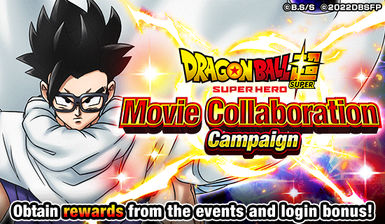
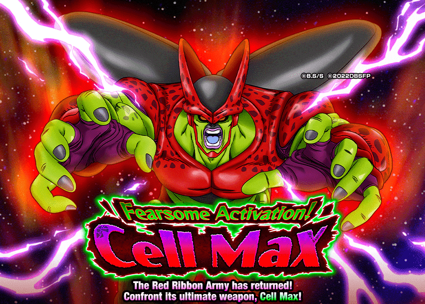
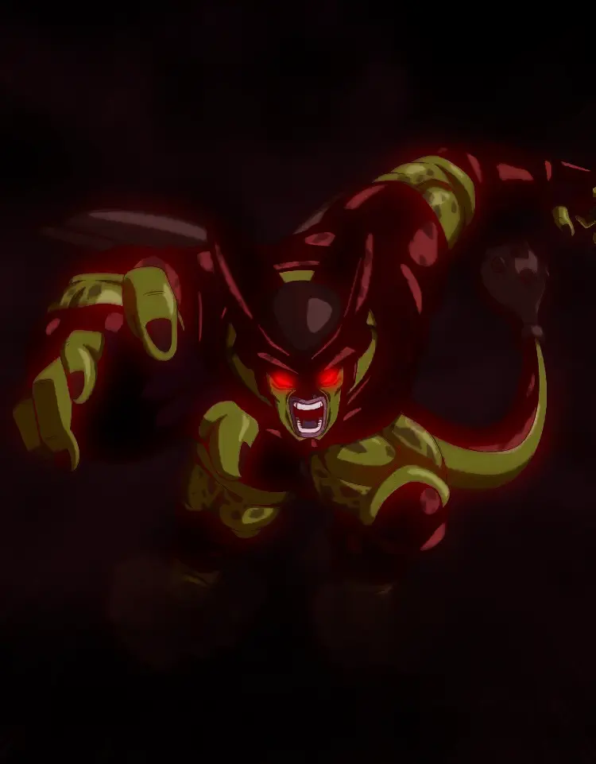

Só teve 1 coisa aqui.
Esse foi o começo de uma das celebrações mais hype e decepcionante ao mesmo tempo, bizarro

Tá afim de ouvir uma história?
Era uma madrugada de Sexta-Feira, 1 e pouco da manhã
"Tá perto de abrir um novo evento do filme né? Acho que vale a pena esperar pra ver como vai tar"
2 da manhã.
O evento abre, e tudo que está diante de seus olhos é o título "Fearsome Activation! Cell Max" e uma arte do novo vilão do filme, mas completamente escurecida
"Que bizarro, deve ser pra evitar spoiler do design dele pra quem não assistiu ainda, enfim.."
Disseram nas notícias que era um evento de alta dificuldade, então você entrou no evento com um time aceitável e forte
Você nota que a primeira fase do Cell Max não dá dano em nenhum personagem e tem pouca vida, então você apenas ignora e vai pra próxima fase
A segunda fase dele tem alguns ataques em área, mas eles são fracos e ele continua incapaz de causar qualquer dano nos seus personagens, só tinha um pouco mais de HP..
Terceira fase.. ué? Ele trava os personagens? Sem problema, contanto que ele não dê um super imediat-

...
Eu diria que o Cell Max foi um dos bosses mais absurdos da história do Dokkan, simplesmente por que ninguém tava pronto pra isso
O boss tinha 2 fases iniciais super fáceis, só pra terceira fase literalmente destruir tudo
Tendo presenciado essa situação, posso dizer que foi uma situação quase desesperadora, pq quase nada funcionava, não era um boss que se enfraquecia com o tempo ou tinha uma mecânica secreta
Personagens como o Goku God TEQ do Sétimo Aniversário, que era pra ser uma parede invencível, estavam tomando 300k ou até 400k do super do Cell Max
Super attack esse que simplesmente era de 1.855.000 de dano, praticamente 2 milhões de dano e era muito maior que o super da red zone do Broly, que era a luta mais difícil até o momento
E o super attack do Cell Max era extremamente destrutivo, já que ele podia dar até 2 supers no turno e tinha um cooldown extremamente baixo
E como se não bastasse isso, até os ataques básicos dele eram super perigosos e facilmente matavam personagens
E o que era mais desesperador.. o fato de que você não podia levar support memories ou outros itens, a única coisa que você pode levar são 2 sementes dos deuses e nada mais
Vale lembrar que o Cell Max podia travar personagens, então as sementes dos deuses eram úteis, mas só por 2 turnos, e acredite.. não era o suficiente, pq o Cell Max tinha MUITO HP, e eu digo MUITO MESMO
Foi um momento de "Você tinha que estar lá pra sentir", por que nessa madrugada, depois de ser solado pelo Cell Max, ver diversos comentários no Reddit, Twitter e outras redes sociais de pessoas completamente perdidas, já que essa boss fight parecia ser impossível de derrotar
E pra completar, se o JP estava ferrado, o global estava mais ainda, já que a gente não tinha acesso ao novo melhor card do jogo ainda, que era o Vegeta e Trunks LR
O evento foi ficando mais fácil com os novos personagens? Foi.
Mas naquela madrugada em que ele lançou.. foi completamente diferente
Você chegou ao fim dessa página!
Obrigado por ler tudo, e fica a vontade pra ver outras